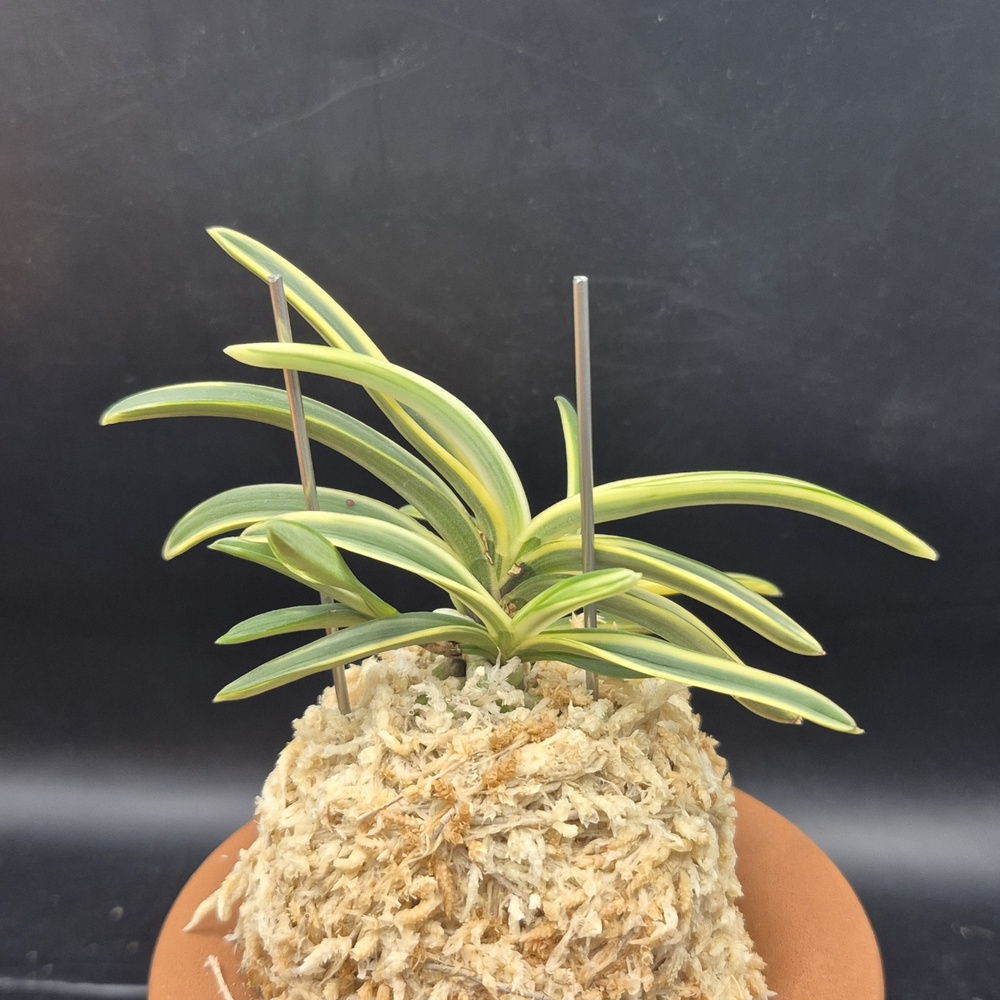
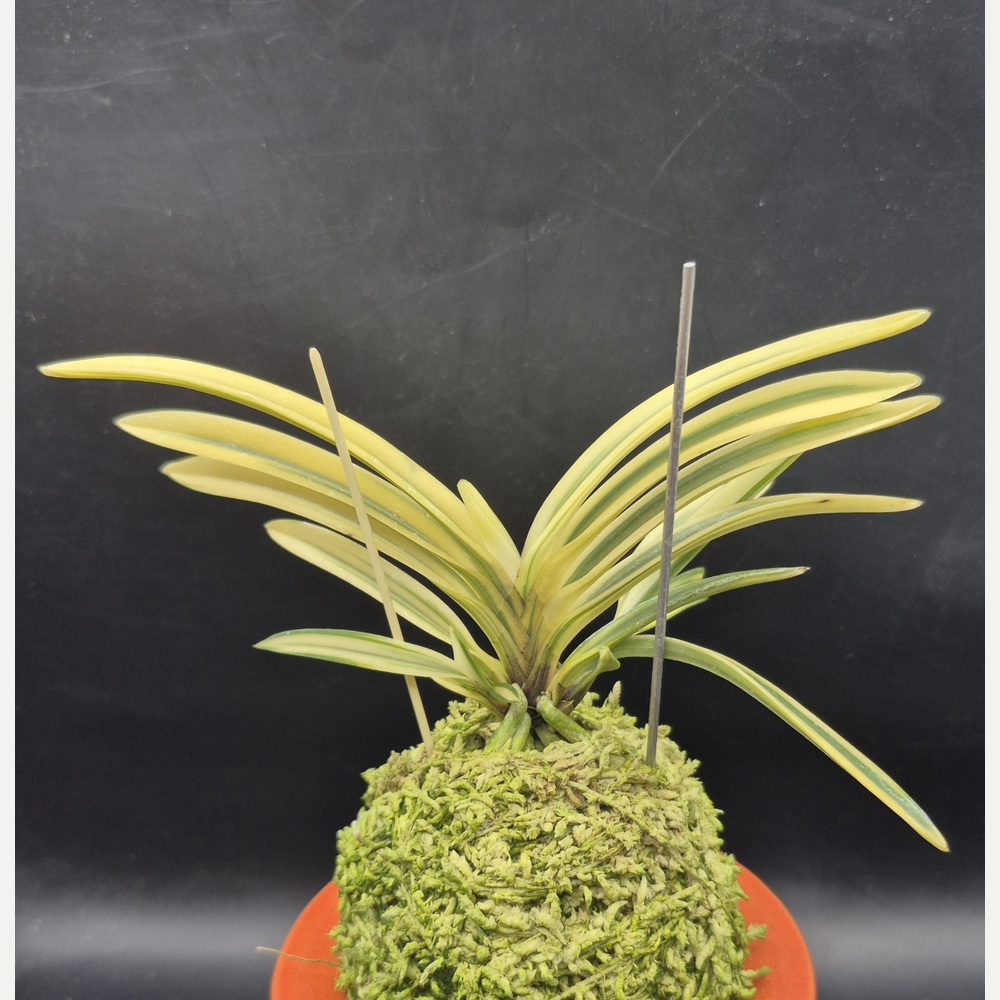
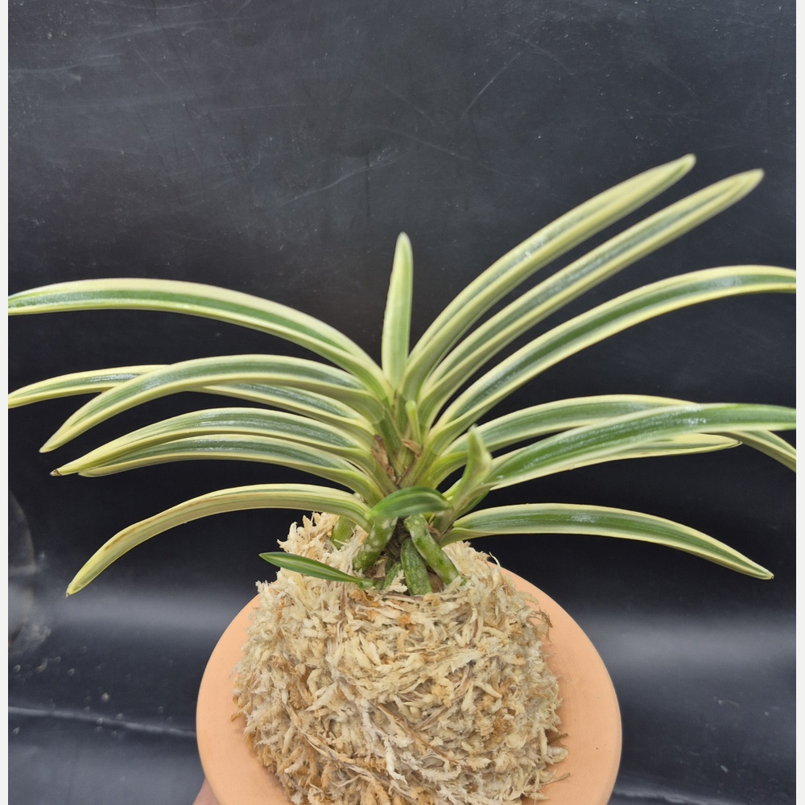
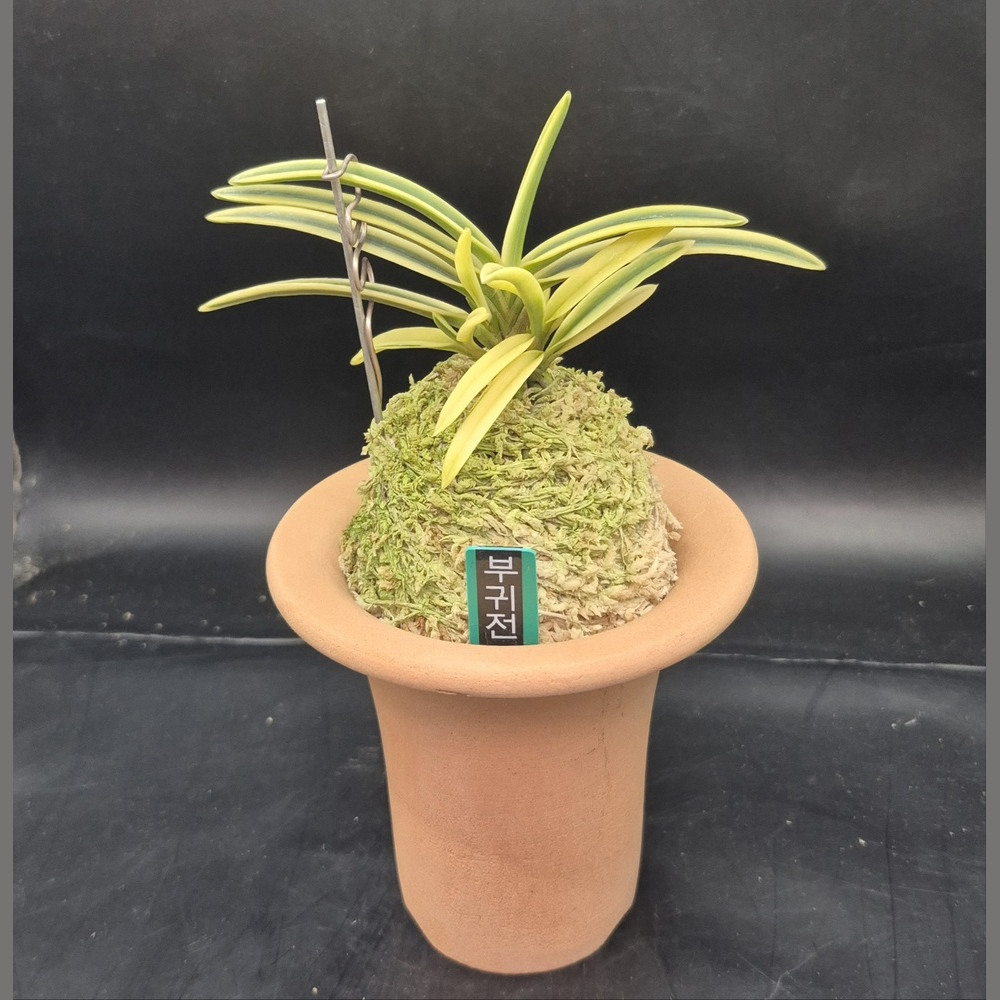

CSFART
숯돌꽃 난농원
CSFART 상품 안내
무지
호·중반
복륜
특예
호반
화물
입문·기타란
석곡
자재
옆으로 밀면 메뉴가 더 있어요 ›
CSFART COLLECTION
복륜
복륜 상품

서학 1026 · 4촉
160,000원
복륜 · 굽이치는 잎예 · CSFART서학_1026

백옥루(白玉樓) 1024
300,000원
아마미계 백복륜 · 긴 희엽 · CSFART백옥루_1024

태백령(太白嶺) 1023
200,000원
선천성 설백 대복륜 · 우아한 잎선

부귀전 1022 풍란
350,000원
신엽 유령엽 · 성숙잎 녹 중심의 복륜
옥금(玉錦) 풍란
350,000원
소형 희엽 · 백복륜
서시 1001 풍란 · 부귀란
70,000원
백복륜 · 실제 판매 개체 · 사진 기준 분류